| Resurrection | Web | 2025 |
|
A time-based website created for a cabaret artist at The BOX NYC show, featuring a dynamic background that changes with the time of day.
This immersive digital experience complements the performer's physical presence, creating a seamless bridge between the digital and physical realms of artistic expression. |
||
| Source Consume | Installation | 2024 |
|
An interactive QR code installation for an anti-consumption fashion show that redirects users to live feeds of sites affected by overconsumption.
This project creates a direct connection between fashion consumption and its environmental impact by transporting viewers to various locations affected by overconsumption, including manufacturing sites, waste dumps, and natural areas under threat. 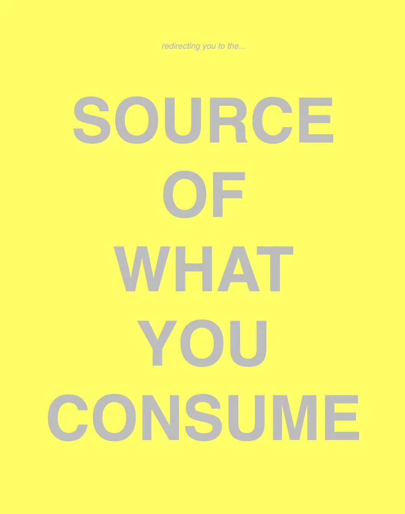 |
||
| Infinite Podcast | Web | 2024 |
|
A generative audio piece that infinitely chops and screws true crime podcasts together, creating an endless stream of fragmented narratives.
Created for the Rusty Utopia group show by Artists Quarters, this piece examines our cultural obsession with true crime content by algorithmically remixing it into an unsettling, never-ending stream. |
||
| Musical Tie | Wearable | 2024 |
|
Made a silly thing with a children's toy I thrifted… thinking about dynamics between work and play// professional items and toys.
I'd wear this if I was invited to a funeral for a musician. Or maybe if I was a server at a bar with live jazz, and had to help the guitarist tune up (swanky style). Anyway, I broke it... 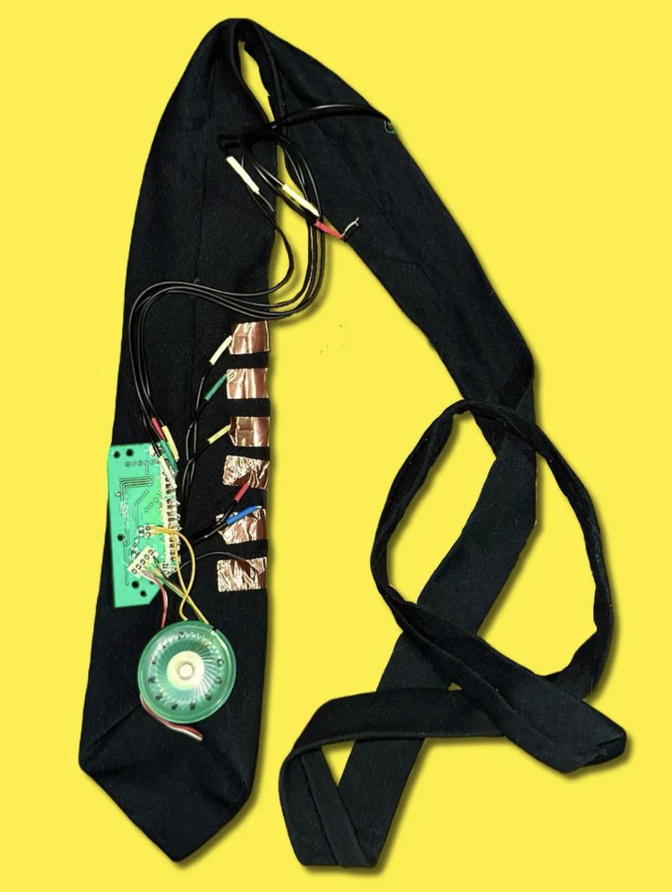 |
||
| Machine Learning Demo with Book Covers | ML | 2024 |
|
A quick ML demo using the cocossd database to detect bookcovers.
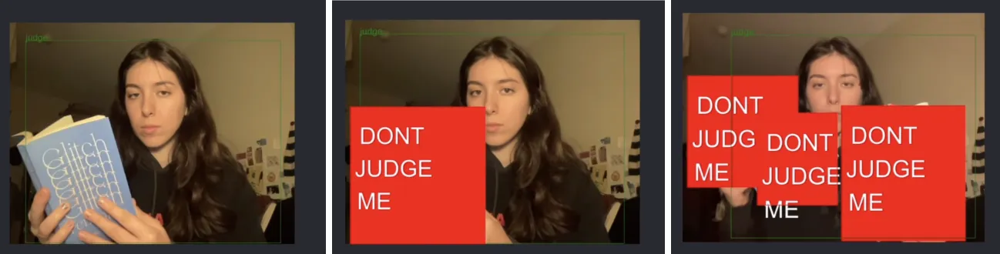 |
||
| Testing Tina's Vision | Web | 2023 |
|
In an interview with a company, the CEO commented on my glasses and how the lenses are different shapes.
This was a cutesy project I put together in a night. 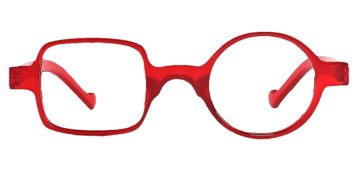 |
||
| Elf Barighian | AR | 2023 |
|
This piece was made as a mockup for a cannabis delivery company, Doobie.
It is a great demo of placing 3D assets into the real world. 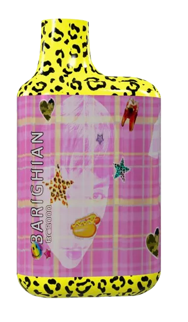 |
||
| En Route Super Sized Necklace | AR | 2023 |
|
Inspired by Viviene Westwood's AR campaign for larger-than-life jewelry in real space.
I made a 3D model of one of En Route's best-selling necklaces and got some early pics using meta spark for a real-world world object placement. It's always good for me to have some basic 3D modeling in my freelance practice. 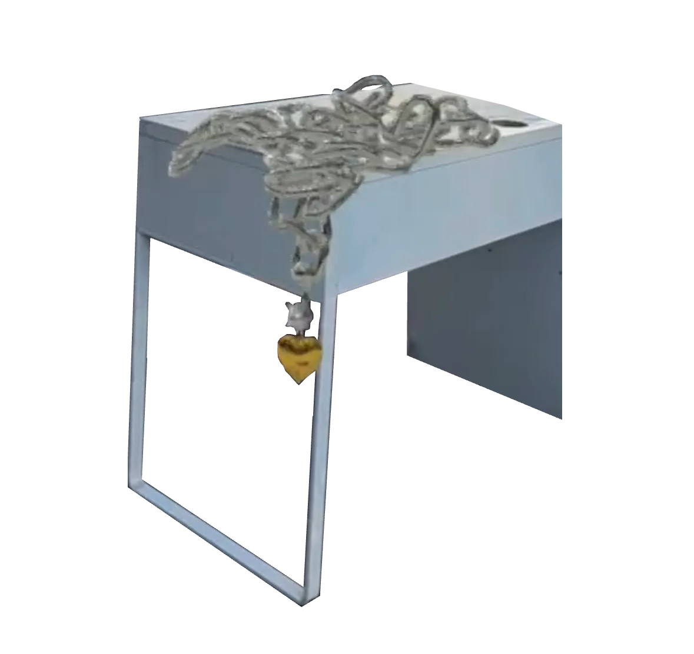 |
||
| Pop-up Experiments | Web | 2023 |
|
This piece is meant to be funny and also experimental. It is about how we may seem perfect on paper even if that could not be farther from the truth.
If you want to try this experience, make sure popups and camera are turned on. 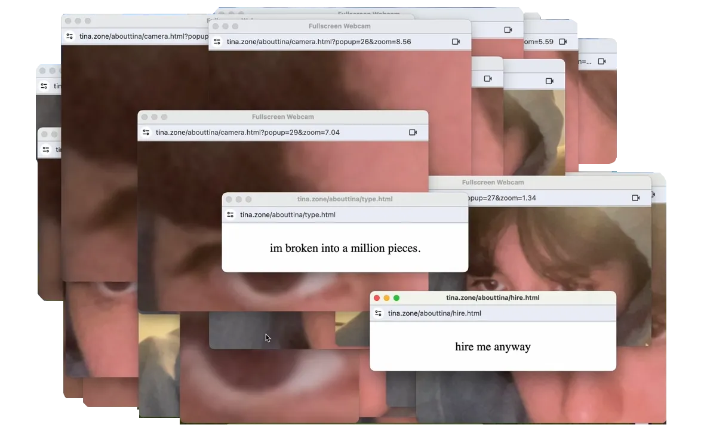 |
||
| Columbia ADP's Art Exhibit | Web | 2023 |
|
Columbia University put on a play based on old alumni's tragic love letters, and featured different artists from NYC.
I was invited to participate, and in addition to some live-coding visuals I did for the performance, I also had this simple html/js animation. 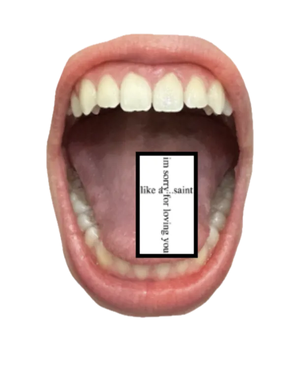 |
||
| Magic 8 Ball | Web | 2023 |
|
A simple magic-8 ball I made using my own head, designed to have an old primitive style of animation.
I still use this if I'm unsure. |
||
| AR Portfolio Enhancer | AR | 2023 |
|
A portfolio enhancer I designed using A-frame, that I no longer use on my personal website.
Instead of having so much text on my projects page, I decided to record casual videos of myself discussing each one. 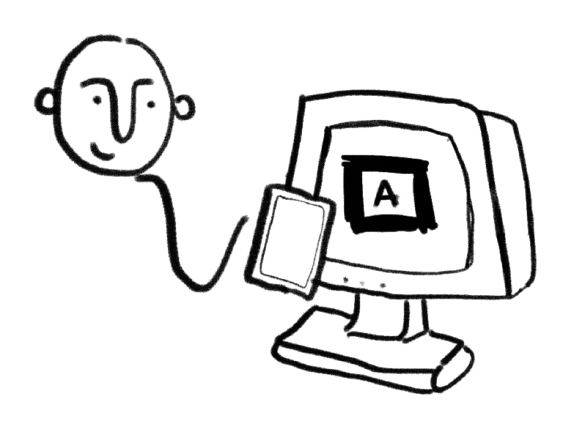 |
||
| Audio-Reactive Visualizer Projects | Live coding | 2022 |
|
As an artist in residence, I live code visuals for lots of different NYC bands.
Check them out!
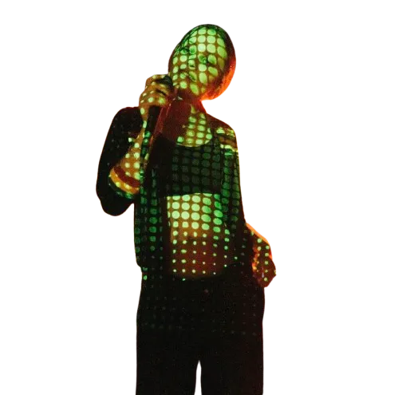 |
||
| Chrome Extension: Stop Buying Things! | Chrome extension | 2022 |
|
After discovering the trend of "deinfluencing," I decided to take a stab at the consumerism problem.
I noticed that because of how convenient it has become to order things online, we are consuming much more than we need to. My simple solution to this is a chrome extension I aptly named "Stop Buying Things." By detecting that you are on a shopping cart page, the pop-up turns your browser window red for a few seconds, then reminds you of its simple creed: STOP BUYING THINGS! In the few seconds where your browser is totally red, it will allow you to take a deep breath before truly considering if you need to buy anything. 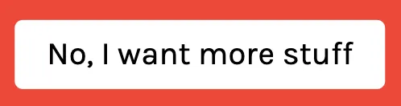 |
||
| Mathy, the Math Cat! | Education | 2022 |
|
An additional skill practice program built for English-speaking 2nd graders.
Its purpose is to help students improve their additional skills by encouraging them to get multiple answers in a row. Users answer the displayed arithmetic question, which increases in difficulty every level. Users submit their answer by pressing the submit button, or pressing the enter key on their keyboard. If the user answers correctly, a new problem will be randomly generated.
The number of currently consecutive answers is stored, and it is displayed under "Current Streak" on the webpage. The user's highest streak for the session is also displayed, which is reset when the page is refreshed/a new session starts. For every correctly answered question, the screen displays "Correct! Great Job!" with an accompanying image of the original avatar, Mathy the Adventure Cat, randomly displaying 1 of 3 positive emotions. Every 10 correct consecutive answers is rewarded with unlocking a new background. When users enter incorrectly, the current streak is reset to 0, and the question will not change until it is answered correctly. Mathy the Adventure Cat is displayed as having a pensive, thinking face. When users need help, they can press the help button in the top right of the div container. This alerts the user of some ways to help them solve the problem. For users who have sight impairments or struggle with dyscalculia, there is a speech-to-text toggle button displayed under the current level. 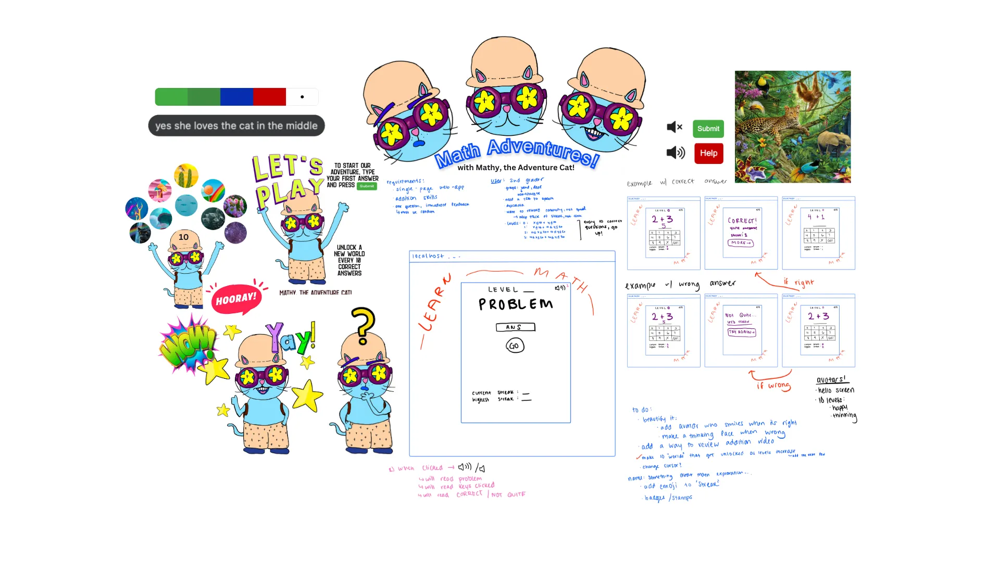 |
||
| Emotions Detector | Web | 2023 |
|
Inspired by the dystopian smile detector Canon installed in their Chinese offices (2021), I temporarily implemented browser-based emotion tracking on my personal website.
With Google Analytics, I was able to see whether or not people were enjoying their time at tina.zone. 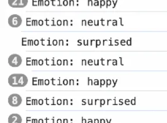 |
||
| Interactive Fish Tank | Web | 2021 |
|
A project I completed in a 300-level Introduction to Computer Graphics class at Wellesley College.
The entire project was done in JavaScript, WebGL, and Three.js. Click the link to see how you can interact with the environment using your keyboard. |
||